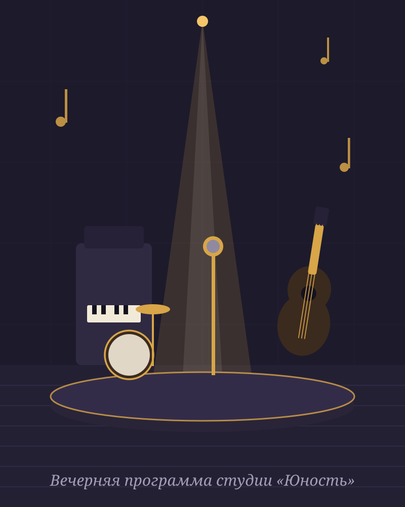

Фортепиано
Классическая и современная программа, постановка рук и чтение нот.
Музыкальная студия · Ростов-на-Дону
Фортепиано, вокал, гитара и ударные для детей и взрослых. Сыграйте гамму на 3D-пианино прямо на странице — и запишитесь на бесплатный пробный урок.
Направления
Состав курсов в демо-версии — пример структуры сайта. При запуске заменим на актуальные направления, преподавателей и цены студии.
Классическая и современная программа, постановка рук и чтение нот.
Постановка голоса, дыхание, работа с репертуаром и сценическим движением.
Акустика и электрогитара: аккорды, бой, перебор и любимые песни.
Ритм, координация и работа с установкой с первых занятий.
Игровой формат, развитие слуха и подготовка к музыкальной школе.
Занятия без музыкального прошлого — в удобное вечернее время.

Пробный урок
На пробном занятии преподаватель покажет инструмент, оценит ваш уровень и предложит программу. Запись — через Telegram студии.
Укажите направление, возраст и удобное время занятий.
Знакомство с преподавателем, инструментом и первой простой мелодией.
Расписание, программа и цели — от первых нот до выступлений.
Отзывы · демо-текст
«Пример отзыва: пришла взрослой без опыта — через месяц играю первую пьесу, преподаватель объясняет спокойно и по делу»
«Пример отзыва: сын ждёт занятия всю неделю, нравится, что можно выбрать вечернее время после школы»
Перед записью
Для первых занятий — нет: вы познакомитесь с инструментом в студии. Для домашних занятий преподаватель подскажет подходящий вариант.
Да. Программа строится от вашего уровня и музыкальных предпочтений, без обязательной классической школы.
Через Telegram студии или по телефону. Пробное занятие бесплатное: вы знакомитесь с преподавателем и форматом обучения.
Запись
Напишите направление и удобное время. Ответим, подберём преподавателя и предложим время пробного урока.